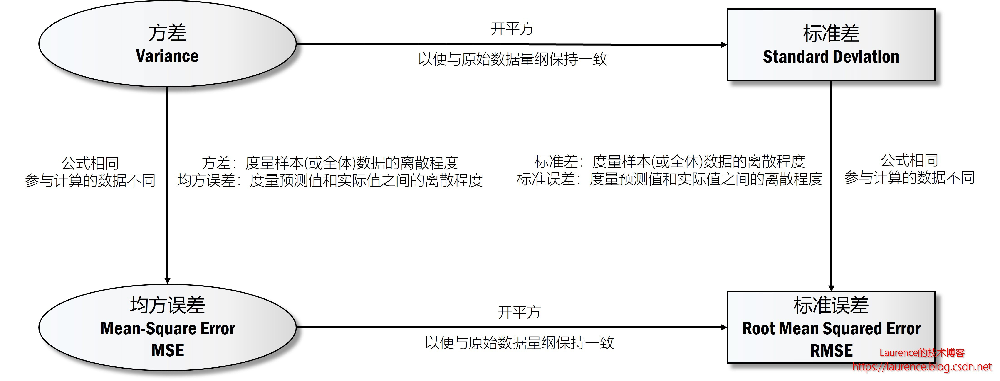
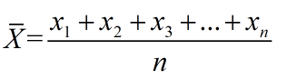
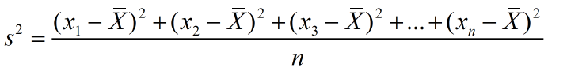
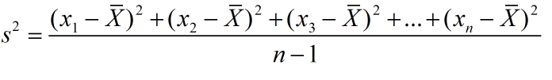
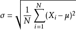
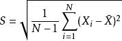
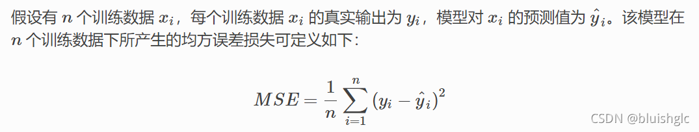
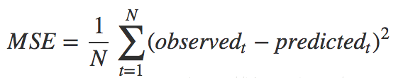
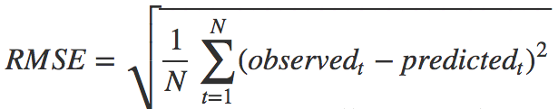

算法效果评估：均方根误差（RMSE）/ 标准误差
1. 评估算法的效果
常见的算法效果评估函数是 标准误差，亦称为：均方根误差（Root Mean Square Error） ，由于这个值的计算与方差，标准差，均方误差都有一定的关系，我们先通过下图给出它们之间的关系，然后逐一解释一下。

注：这份比较隐去了总体方差和样本方差之间的差异，统一用方差来指代了。
2. 方差（Variance）
方差用于度量一组数据的离散程度 。对于方差我们可以用一种朴素的方式理解和记忆：它不是平方的差，而是差的平方求和之后再取平均值，对于计算方差取差的平方这一点，可以很形象地理解为以两点间的直线距离为边得到一个正方型，以面积（平方）的形式度量离散程度，显然面积越大，意味着离散程度越高。
2.1 总体方差
总体方差，也叫做有偏估计，其实就是普遍在使用的标准“方差”的概念。计算总体方差需要先计算出总体均值，总体均值的计算方式是：
总体均值：

其中，n表示这组数据个数，x1、x2、x3……xn表示这组数据具体数值。然后，基于总体均值，可得：
总体方差：

2.1.1 在numpy中计算总体方差
在numpy中，计算方法的函数是 var (即variance的缩写)， numpy中var方法默认计算的就是总体方差（计算时除以样本数 N），如需需要计算样本方差（计算时除以 N - 1），应设置参数 ddof = 1 ， 以下是在Numpy中计算总体方差的示例：
1 | import numpy as np |
输出如下：
1 | 数据集 = [0 1 2 3 4] |
2.1.2 在pandas中计算总体方差
在Pandas的DataFrame中，同样有用于计算行和列方差的函数，不过，与numpy不同的是， 在pandas中默认计算的是样本方差（计算时除以 N - 1），如需需要计算总体方差（计算时除以样本数 N），应设置参数 ddof = 0 。也就是说：在计算方差这件事上，numpy和pandas的默认行为是相反的，numpy默认计算总体方差，pandas默认计算样本方差。以下是在pandas中分别计算行和列的样本方差的示例：
1 | import pandas as pd |
输出如下：
1 | 数据集: |
2.2 样本方差
但是在实际情况中，总体均值可能无法得到（样本过多或无法穷举），此时往往会通过抽样来获得一个近似值，这个值叫样本方差。
样本方差：

至于样本方差中的分母为什么是n-1，可以这样理解：因为样本方差是用来估计总体中个体之间的变化大小，只拿到一个个体，当然完全看不出变化大小。反之，如果公式的分母不是n-1而是n，计算出的方差就是0——这是不合理的，因为不能只看到一个个体就断定总体的个体之间变化大小为0。
2.2.1 在numpy中计算样本方差
如2.1.1节所述，numpy中默认计算的总体方差，如需计算样本方差，需在var函数中设置ddof = 1。以下是在Numpy中计算样本方差的示例：
1 | import numpy as np |
输出如下：
1 | 数据集 = [0 1 2 3 4] |
2.2.2 在pandas中计算样本方差
如2.1.2节所述，pandas中默认计算的就是样本方差，所以不需要设置ddof。以下是在Pandas中计算样本方差的示例：
1 | import pandas as pd |
输出如下：
1 | 数据集: |
3. 标准差 / 均方差 （Standard Deviation）
标准差又常称均方差，是方差的算术平方根。均方差反映的也是一组数据的离散程度 。其实方差与标准差反映的都是数据集的离散程度，只是由于方差出现了平方项，导致量纲与原始数据量纲不一致，无法直观反映出偏离程度，所以才有了标准差。
正因为均方差是方差的平方根，所以对应于总体方差和样本方差，就总体均方差（总体标准差）和样本均方差（样本标准差），它们的计算公式分别是：
3.1 总体标准差

3.1.1 在numpy中计算总体标准差
在numpy中，计算标准差的函数是 std (即standard的缩写)，与 var方法 一样， numpy中std方法默认计算的就是总体标准差（计算时除以样本数 N），如需需要计算样本标准差（计算时除以 N - 1），应设置参数 ddof = 1 ， 以下是在Numpy中计算总体标准差的示例：
1 | import numpy as np |
输出如下：
1 | 数据集 = [0 1 2 3 4] |
3.1.2 在pandas中计算总体标准差
在Pandas的DataFrame中，同样有用于计算行和列标准差的函数，不过，与numpy不同的是， 在pandas中默认计算的是样本标准差（计算时除以 N - 1），如需需要计算总体标准差（计算时除以样本数 N），应设置参数 ddof = 0 。也就是说：在计算标准差这件事上，numpy和pandas的默认行为是相反的，numpy默认计算总体标准差，pandas默认计算样本标准差。以下是在pandas中分别计算行和列的总体标准差的示例：
1 | import pandas as pd |
输出如下：
1 | 数据集: |
3.2 样本标准差

3.2.1 在numpy中计算样本标准差
在numpy中，计算标准差的函数是 std (即standard的缩写)，与var方法一样， numpy中std方法默认计算的就是总体标准差（计算时除以样本数 N），如需需要计算样本标准差（计算时除以 N - 1），应设置参数 ddof = 1 ， 以下是在Numpy中计算样本标准差的示例：
1 | import numpy as np |
输出如下：
1 | 数据集 = [0 1 2 3 4] |
3.2.2 在pandas中计算样本标准差
如3.1.2节所述，pandas中默认计算的就是样本标准差，所以不需要设置ddof。以下是在Pandas中计算样本标准差的示例：
1 | import pandas as pd |
输出如下：
1 | 数据集: |
4. 均方误差（mean- square error, MSE）
均方误差MSE通过计算预测值和实际值之间距离（即误差）的平方来衡量模型优劣。即预测值和真实值越接近，两者的均方差就越小。MSE的值越小，说明 预测模型 描述实验数据具有更好的精确度。均方误差损失又称为二次损失、L2损失，常用于回归预测任务中。如下是均方误差的计算方法：

基于上述表述，均方误差也会这样表述：

其中observed(t)就是针对数据t的实际输出值（观测到的值），predicted(t)就是对应的预测值。
其实从均方误差MSE的计算公式可以看出，它和方差是高度一致的，只是参与计算的变量(项）不同，所以度量的角度也就不同，方差是用来衡量一组数自身的离散程度，而均方误差是用来衡量观测值（真值）与预测值之间的偏差。
最后，还有一小细节需要注意一下：均方误差的计算除以的是N不是N-1，因为预测值是有限的，和测试用的实际值也是一一对应的，所以，再准确一点说，均方误差的计算与总体方差计算公式相同，除的是N不是N-1。
5. 标准误差 / 均方根误差（root mean squared error，RMSE）
均方根误差也称之为标准误差，是均方误差的算术平方根。引入均方根误差与引入标准差（均方查）的原因是完全一致的，即均方误差的量纲与数据量纲不同，不能直观反映离散程度，故在均方误差上开平方根，得到均方根误差：

同样的，均方根误差RMSE和标准差的计算公式也是高度近似的：标准差是用来衡量一组数自身的离散程度，而均方根误差是用来衡量观测值（真值）与预测值之间的偏差。
6. 所有值的计算方法汇总
1 | import numpy as np |
输出如下：
1 | 数据集 = [0 1 2 3 4] |
参考文章：
算法效果评估：均方根误差（RMSE）/ 标准误差